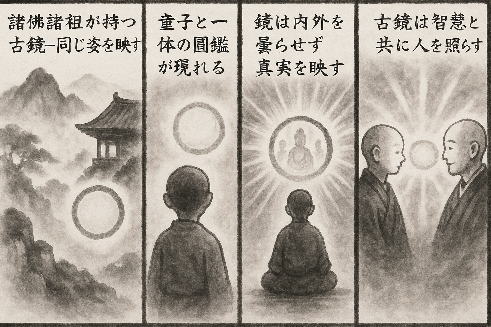

七十五巻 巻一覧
正法眼藏第19 古鏡
本ページは各巻の紹介ページです。tools/gen_web_volumes.py が doc/正法眼蔵.txt から要点の短い抜粋を載せています（全文の引用ではありません）。
出典（原文）: https://shomonji.or.jp/zazen/doc/genzou.html
原文・現代語訳の全文は 全文ページを参照してください。
この巻の紹介（概要）
道元『正法眼蔵』七十五巻の第19篇「古鏡」です。禅籍・経典への引用や語の行間が重なりやすいので、一度ですべてを要約に還元しない読み方を推奨します。問答 Bot では巻スコープにこの題名を含めると応答が安定しやすいことがあります。
語彙の足場
- 題名語：巻題「古鏡」は、道元が本章で特に扱う論点の看板です。辞書義だけに固定せず、原文中の用例で意味を確かめます。
- 引用と典故：公案・経文の引用は、一字一句の照応（何に答えているか）を押さえると全体が見えやすくなります。
- 学び方：抜粋だけでも音読し、分からない箇所は印を付けて後から問うとよいです。
原文（要点の抜粋）
当巻の冒頭付近からの短い抜粋です。長い引用は載せていません。全文は全文ページを参照してください。出典はリポジトリ内 doc/正法眼蔵.txt です。原文の参照元: https://shomonji.or.jp/zazen/doc/genzou.html
諸佛諸祖の受持し單傳するは古鏡なり。同見同面なり、同像同鑄なり、同參同證す。胡來胡現、十萬八千、漢來漢現、一念萬年なり。古來古現し、今來今現し、佛來佛現し、祖來祖現するなり。
第十八祖伽耶舍多尊者は、西域の摩提國の人なり。姓は鬱頭藍、父名天蓋、母名方聖。母氏かつて夢見にいはく、ひとりの大神、おほきなるかがみを持してむかへりと。ちなみに懷胎す、七日ありて師をむめり。師、はじめて生ぜるに肌體みがける瑠璃のごとし。いまだかつて洗浴せざるに自然に香潔なり。いとけなくより閑靜をこのむ、言語よのつねの童子にことなり。うまれしより一の淨明の圓鑑、おのづから同生せり。
圓鑑とは圓鏡なり、奇代の事なり。同生せりといふは、圓鑑も母氏の胎よりむめるにはあらず。師は胎生す、師の出胎する同時に、圓鑑きたりて、天眞として師のほとりに現前して、ひごろの調度のごとくありしなり。この圓鑑、その儀よのつねにあらず。童子むかひきたるには圓鑑を兩手にささげきたるがごとし、しかあれども童面かくれず。童子さりゆくには圓鑑をおほうてさりゆくがごとし、しかあれども童身かくれず。童子睡眠するときは圓鑑そのうへにおほふ、たとへば花蓋のごとし。童子端坐のときは圓鑑その面前にあり。おほよそ動容進止にあひしたがふなり。しかのみにあらず、古來今の佛事、ことごとくこの圓鑑にむかひてみることをう。また天上人間の衆事諸法、みな圓鑑にうかみてくもれるところなし。たとへば、經書にむかひて照古照今をうるよりも、この圓鑑よりみるはあきらかなり。
しかあるに、童子すでに出家受戒するとき、圓鑑これより現前せず。このゆゑに近里遠方、おなじく奇妙なりと讃歎す。まことに此裟婆世界に比類すくなしといふとも、さらに他那裡に親族かくのごとくなる種胤あらんことを莫怪なるべし、遠慮すべし。まさにしるべし、若樹若石に化せる經卷あり、若田若里に流布する知識あり。かれも圓鑑なるべし。いまの黄紙朱軸は圓鑑なり、たれか師をひとへに希夷なりとおもはん。
あるとき出遊するに、僧伽難提尊者にあうて、直にすすみて難提尊者の前にいたる。尊者とふ、汝が手中なるはまさに何の所表かある。有何所表を問著にあらずとききて參學すべし。
師いはく、諸佛大圓鑑、内外無瑕翳、兩人同得見、心眼皆相似（諸佛の大圓鑑は内外瑕翳なし。兩人同じく得見あり、心と眼と皆相似たり）。
しかあれば、諸佛大圓鑑、なにとしてか師と同生せる。師の生來は大圓鑑の明なり。諸佛はこの圓鑑に同參同見なり。諸佛は大圓鑑の鑄像なり。大圓鑑は、智にあらず理にあらず、性にあらず相にあらず。十聖三賢等の法のなかにも大圓鑑の名あれども、いまの諸佛の大圓鑑にあらず。諸佛かならずしも智にあらざるがゆゑに諸佛に智慧あり。智慧を諸佛とせるにあらず。
參學しるべし、智を説著するは、いまだ佛道の究竟説にあらざるなり。すでに諸佛大圓鑑たとひわれと同生せりと見聞すといふとも、さらに道理あり。いわゆるこの大圓鑑、この生に接すべからず、他生に接すべからず。玉鏡にあらず銅鏡にあらず、肉鏡にあらず髓鏡にあらず。圓鑑の言偈なるか、童子の説偈なるか。童子この四句の偈をとくことも、かつて人に學習せるにあらず。かつて或從經卷にあらず、かつて或從知識にあらず。圓鑑をささげてかくのごとくとくなり。師の幼稚のときより、かがみにむかふを常儀とせるのみなり。生知の辯慧あるがごとし。大圓鑑の童子と同生せるか、童子の大圓鑑と同生せるか、まさに前後生もあるべし。大圓鑑は、すなはち諸佛の功徳なり。
このかがみ、内外にくもりなしといふは、外にまつ内にあらず、内にくもれる外にあらず。面背あることなし、兩箇おなじく得見あり。心と眼とあひにたり。相似といふは、人の人にあふなり。たとひ内の形像も、心眼あり、同得見あり。たとひ外の形像も、心眼あり、同得見あり。いま現前せる依報正報、ともに内に相似なり、外に相似なり。われにあらず、たれにあらず、これは兩人の相見なり、兩人の相似なり。かれもわれといふ、われもかれとなる。
心と眼と皆相似といふは、心は心に相似なり、眼は眼に相似なり。相似は心眼なり。たとへば心眼各相似といはんがごとし。いかならんかこれ心の心に相似せる。いはゆる三祖六祖なり。いかならんかこれ眼の眼に相似なる。いはゆる道眼被眼礙（道眼、眼の礙を被る）なり。
いま師道得する宗旨かくのごとし。これはじめて僧伽難提尊者に奉覲する本由なり。この宗旨を擧拈して、大圓鑑の佛面祖面を參學すべし、古鏡の眷屬なり。
第三十三祖大鑑禪師、かつて黄梅山の法席に功夫せしとき、壁書して祖師に呈する偈にいはく、
図解（4コマ・AI生成）
教義の根拠は原文・出典に従い、漫画は比喩の補助に留めてください。

深掘り（読解のコツ）
- 道元文は定義の羅列に見えても、多くの場合誤解への遮断と正伝の姿勢が背骨になっています。
- 「当体」「現成」「即」などの語が出たら、その巻独自の差別相にどう接続しているかをメモしておくとよいです。